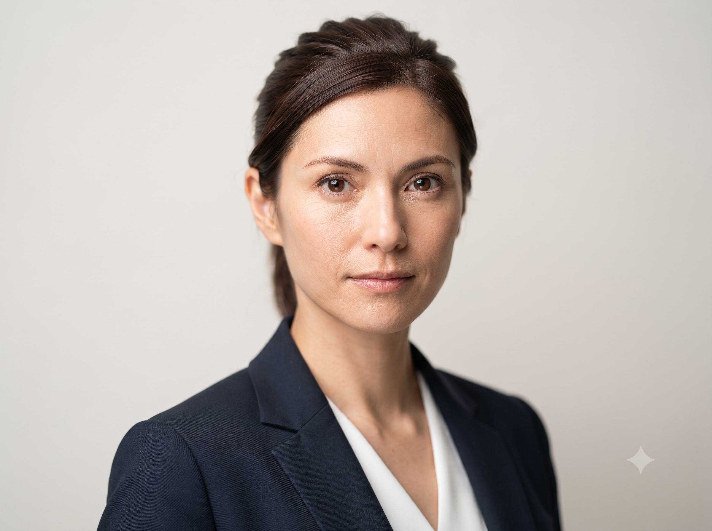

Portrait AI image prompt
Professional studio headshot
Create a polished corporate portrait while preserving a natural expression and realistic skin texture.

Copy this prompt
Professional corporate headshot of the person in the reference photo. Plain light-grey seamless background, soft diffused key light from the front-left, gentle fill from the right. Sharp focus on the eyes, natural skin texture, no heavy retouching. Shot on an 85mm lens at f/4 with a shallow depth of field. Neutral, confident expression.
How to use it
- Use a front-facing, high-resolution reference photo.
- Paste the prompt into your image tool with the photo attached.
- Adapt the background or wardrobe details to fit your use case.